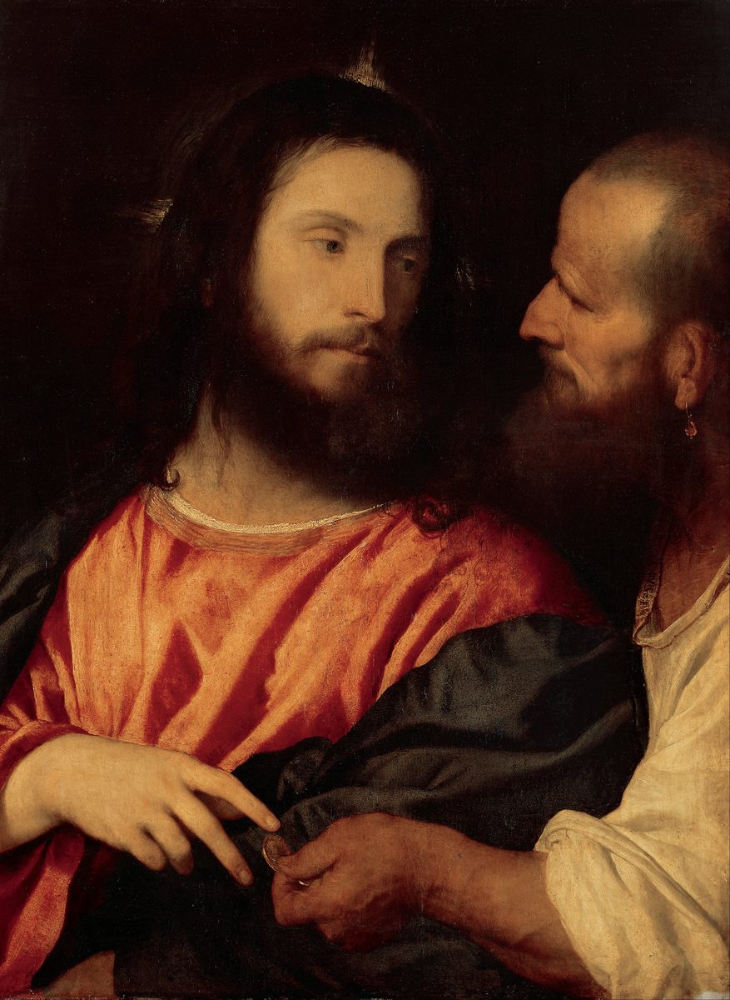

Matthew 22 — The Mister Translation

Titian throws away the crowd, the temple and the trap, and leaves two faces and a coin. ⚠ Note what the composition argues. The coin is the exact centre of the picture, and Christ does not take it — his hand is open and at rest while the questioner’s fingers push the money into the space between them. Verse 20 asks whose image and whose inscription the thing carries; Titian makes the viewer do the looking. The questioner is marked as worldly by small means — the pearl earring, the coarse shirt, the weathered scalp against Christ’s smoothness — without being made a grotesque. ⚠ And the object it was made for is almost too neat: Vasari says the panel was painted in 1516 as the door of Alfonso I d’Este’s coin cabinet — a picture about a coin, hinged onto the place the duke kept his coins. The subject is very rare in painting and this may be its first appearance, and it is the earliest signed work by Titian. “Render to Caesar” had some edge for a duke whose territory straddled the Empire and the Papal States. Now in Dresden.
.jpg){kind=link}
Translator’s Notes — verse by verse
Each note explains this translation's choice and compares the seven versions on the shelf. Quotations from copyrighted versions (NIV, TLB, NWT) are kept to short phrases for comparison; KJV, Geneva, Douay-Rheims and ASV are public domain.
The third parable aimed at the same men. This continues the temple confrontation of chapter 21 — two sons, then tenants, now a wedding — and it is the harshest of the three. ⚠ Verse 7 is the sentence that has made this parable an argument about dating: "sending his armies he destroyed those murderers and burned their city." Many readers hear the destruction of Jerusalem in AD 70 and take it as evidence that Matthew wrote after it; others read it as conventional language for a king's reprisal, of a kind found in the prophets long before. The library reports the argument and does not settle it, and notes what is genuinely odd on any reading: a king conducting a siege while the dinner sits on the table.
Called, and called again. The verb kaleō runs through the whole parable — the keklēmenoi, "those who had been called," are invited twice, refuse twice, and are replaced by whoever is standing at the crossroads, "both bad and good." Note that phrase: the replacements are not described as deserving. And the point of v14 depends on it.
The garment, and the question nobody can answer. A man is found without a endyma gamou. ⚠ Readers have long asked how a man dragged in off the road could be expected to have wedding clothes, and the honest answer is that the parable does not say — the two standard proposals are that garments were provided at the door (for which there is no direct ancient evidence) or that the detail is simply pressed for its own sake, as parables press details. What the text does say is that he ephimōthē, "was muzzled" — the same verb used twelve verses later of what Jesus does to the Sadducees (v34), and the vivid image the shelf usually softens to "was speechless" (KJV) or "was silent" (NIV). It is the word for putting a muzzle on an ox.
And hetaire, the fourth time. "Friend, how did you get in here?" — the cool address chapter 20's note flagged and said was waiting for exactly this: "a wedding hall and a kiss in a garden." Matthew uses it three times and never warmly: to the grumbling labourer (20:13), to this man, and by Jesus to Judas in Gethsemane (26:50). Whoever is called hetaire in this Gospel is about to lose something.
⚠ And a line that finally sits in its own house. "Many are called, but few are chosen." Chapter 20's note said this sentence is a real sentence of Matthew's, absent from the earliest manuscripts at 20:16 and original here — and the manuscripts bear that out: at 22:14 there is no textual dispute at all. It fits here because this parable has actually been about calling: the word klētoi in v14 is the same root as the keklēmenoi who were called and would not come. Copyists borrowed it to round off the vineyard parable, where it has nothing to attach to.
An alliance that should not exist. Pharisees send their disciples "with the Herodians" — partisans of Herod's house, and therefore of collaboration with Rome. The two groups had nothing in common except a target, and the pairing is itself part of Matthew's report. The verb for their plan is pagideusōsin, from pagis, a snare or bird-trap: they intend to trap him in a word.
The trap, and why it worked either way. The kēnsos is the Roman poll-tax — a Latin loanword (census) that Matthew leaves in Greek dress, and a tax paid by every adult in Judea directly to the occupying power. Say yes, and he loses the crowd that has just shouted "Son of David" at him. Say no, and the Herodians have a capital charge to carry to Pilate. Note the flattery in v16 — "you care about no one's opinion, for you do not look at people's faces" — which is a compliment designed to make refusing to answer look like cowardice.
The coin does the work. He asks for it, and the question he asks about it is precise: whose image (eikōn) and whose inscription (epigraphē)? A denarius of Tiberius carried his portrait and a legend naming him son of the divine Augustus, which means the object in their hand was already a small problem for anyone worried about images. ⚠ And eikōn is not a neutral word in a Greek Bible: it is the word of Genesis 1:27, humankind made in the eikōn of God. Titian's painting above puts the coin at the exact centre of the picture and has Christ decline to touch it.
"Give back." Apodote — not "give" but give back, render, return what belongs to someone. KJV's famous "Render therefore unto Caesar" catches it exactly and this translation keeps the sense; NIV's "give to Caesar" loses the prefix, and with it the argument — the coin bears Caesar's face, so it is already his; the question of what bears God's image is left for the hearer to answer. ⚠ The saying has been read as a doctrine of two separate spheres, and as the opposite: a claim that since everything bears God's image, Caesar's share is the small change. The library gives both and does not vote. It notes only that Jesus never says how much belongs to Caesar, and that his questioners "marvelled, and leaving him, went away" without a usable answer.
Who is asking, and what they do not accept. The Sadducees were the priestly aristocracy, and Matthew's parenthesis is the important part: they "say there is no resurrection." They also, according to Josephus and Acts 23:8, rejected angels and fate, and held only the written Torah — which is exactly why the answer that follows quotes Exodus and not the prophets, where a resurrection text like Daniel 12:2 would have been easier and useless.
The riddle is a legal one. Levirate marriage (Deuteronomy 25:5-6, quoted loosely in v24) obliges a brother to marry a childless widow and raise an heir for the dead man. Run it seven times and you have a woman with seven husbands and, the Sadducees think, an absurdity at the resurrection. It is a good argument against a crude view of the afterlife as a continuation of this life's arrangements, which is presumably the view they expected him to hold.
Two errors, named separately. "You are going astray, not knowing the Scriptures nor the power of God." The second half answers the riddle — resurrection is not resumption, and the risen "neither marry nor are given in marriage" but are "like angels," which to Sadducees who denied angels is a second sting. ⚠ Note what the verse does not say: not that the risen are angels, and nothing at all about whether they remember or recognize one another. Later tradition has filled that in generously; the sentence is about marriage.
And then an argument from grammar. Quoting Exodus 3:6 from the burning bush, he supplies the present tense that the Hebrew leaves implicit: "I am the God of Abraham and the God of Isaac and the God of Jacob" — spoken centuries after all three had died — "he is not the God of the dead but of the living." ⚠ The whole weight rests on the copula, and Hebrew does not write one: the Hebrew of Exodus 3:6 has no verb at all in that clause, and both the Greek Old Testament and Matthew supply eimi. So this is an argument built on a tense that the Greek makes explicit and the Hebrew only implies. That is worth stating plainly rather than smoothing over, and it does not by itself make the argument weak — the covenant formula "the God of Abraham" is a relationship, and the claim is that God does not describe himself by relationships that have ended.
A real question, asked in bad faith. "Which commandment is great in the Law?" was a live rabbinic question about weight and priority, not a trick in itself; Matthew says the lawyer asked it peirazōn, testing. The answer is two quotations, and neither is novel — the first is the Shema, Deuteronomy 6:5, recited twice daily; the second is Leviticus 19:18, which he had already quoted to the rich young man (19:19).
What is new is the joining, and one word. "On these two commandments the whole Law hangs, and the Prophets" — krematai, the ordinary verb for something suspended from a peg or a hook, and the same verb the New Testament uses of a man hanging on a tree. KJV reads "hang all the law and the prophets" and this translation keeps the image, where NIV's "all the Law and the Prophets hang on" is the same and NWT's "the whole Law hangs, and the Prophets" preserves the Greek's slightly awkward word order, which is followed here. The metaphor is structural: not that the rest is unimportant, but that it depends from these — remove the peg and everything on it comes down. Compare the Sermon's own summary, "this is the Law and the Prophets" (7:12).
And a small vocabulary note. Matthew's third term in the Shema is dianoia, "mind," where the Hebrew of Deuteronomy 6:5 has heart, soul and strength (me'od). The Greek Old Testament varies here too. So the familiar "heart, soul and mind" is Matthew's line rather than Moses', and the substitution of thought for strength is a real difference in the tradition, not a translator's slip.
He asks the last question. Four groups have interrogated him since he entered the temple; now he turns it round. "Whose son is the Christ?" — and "David's" is the correct, uncontroversial answer, which is the setup.
The argument, and the difficulty English hides. He quotes Psalm 110:1, where the Hebrew has two different words: YHVH, the divine name, said something to adoni, "my lord." The Greek Old Testament renders both with kyrios, so the Greek reads "The Lord said to my Lord," and the puzzle is sharper in Greek than in Hebrew. ⚠ This library prints the divine name where the underlying text has it, and here it does not: Matthew's quotation is from the Greek, where the distinction has already collapsed. So the verse is left with two lords and the note points at the Hebrew, rather than restoring a distinction the evangelist's own source did not have. The argument is that David calls his own descendant his superior, which a father does not do — and the question is left open rather than answered.
The silence that closes the section. "No one was able to answer him a word; nor did anyone dare, from that day on, to question him any more." ⚠ That is a structural full stop, not a flourish: from here the interrogation stops and chapter 23 is Jesus talking without interruption. The controversy in the temple, which began when they demanded his credentials at 21:23, ends with the officials unable to ask anything at all.
Patterns worth carrying forward
Where this translation keeps the words exact / distinct: "was muzzled" for ephimōthē in v12 and "muzzled" again in v34, one vivid verb kept as one word where the shelf reaches for "speechless" and "silenced"; "friend" for hetaire, with the note that it is never warm here; "give back" for apodote (the prefix is the argument, and KJV's "render" has it); image for eikōn, the Genesis 1:27 word, left as image rather than "likeness" or "portrait"; and "the whole Law hangs, and the Prophets" for krematai, keeping the Greek's own word order (with NWT).
Echoes paid. Hetaire (v12) — the third and coolest of Matthew's three "friends," which 20:13's note said was waiting for a wedding hall; "many are called, but few are chosen" (v14) — the line chapter 20's note identified as belonging here and imported there, and the manuscripts agree: no textual dispute at 22:14; the third parable in a row aimed at the men who demanded his credentials at 21:23; and love your neighbour as yourself (v39) — quoted to the rich young man at 19:19, now promoted to one of the two pegs.
Echoes planted. The outer darkness and the grinding of teeth (v13), which the next parables will use again; hetaire (v12), with one use left, in a garden; the Herodians (v16), and the alliance that will reappear at the trial; and the silence of v46, which is the door closing on the questions and opening on chapter 23's uninterrupted answer.
⚠ And four places the library reports rather than decides. The burned city (v7), heard by many as AD 70 and by others as conventional royal reprisal — a dating argument the library sets out without settling. The wedding garment (v11-12), where the parable simply does not explain how a man off the road was to have one. "Give back to Caesar" (v21), read as two separate spheres and as the exact opposite. And the tense at v32, where the argument rests on a present-tense copula that the Greek supplies and the Hebrew of Exodus 3:6 does not write at all.
Next in this book: chapter 23 — nobody interrupts. Seven woes on the scribes and Pharisees, the heaviest sustained speech in the Gospel: phylacteries and fringes, seats at banquets, a gnat strained out and a camel swallowed, whitewashed tombs, the blood of the prophets from Abel to Zechariah — and then, without a pause, the lament: "Jerusalem, Jerusalem… how often I wanted to gather your children as a hen gathers her chicks."